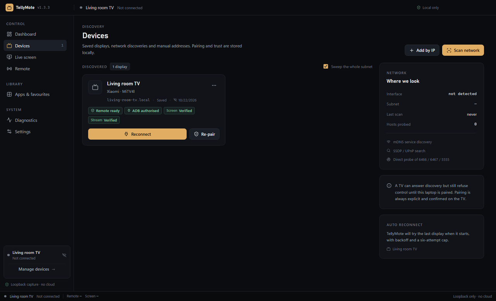

Android TV Remote v2
Pairing with the six-character code on screen, then authenticated key events.
- Pairing
- RSA + code
- Controls
- Keys, power, volume
- Status
- Verified on Mi TV 4A
A remote and a live screen for Android TV, Google TV and Roku. Pair once over your own network. Nothing leaves the room.



Real 3D geometry, rendered offline, with the app's own screenshots as textures. No stock footage, no cloud service, no AI video.
SSDP, mDNS and a direct TCP probe of your subnet run in parallel. Saved TVs reconnect without a scan.
The TV shows a six-character code. Type it once; the client certificate stays on your laptop.
Keys, volume and typed text go straight from your machine to the TV. Round-trip time is measured per press.
Arrows move, Enter selects. Hold an arrow and it repeats like the plastic remote.
Page Up and Down for volume, Space for play/pause, F8 to mute. Every binding is editable.
Type a YouTube search on a real keyboard instead of hunting letters on a grid.
Capture requires ADB debugging on the TV. DRM apps render black — that is the DRM, not a bug.
No vendor app, no platform-tools, no account. TellyMote speaks what the devices already expose.
Pairing with the six-character code on screen, then authenticated key events.
Implemented in-app, so there is nothing to install. Unlocks text, apps and capture.
Keys, app launch and literal text over HTTP. Roku exposes no capture endpoint.
Every packet you just read about stays on the network it was born on.
Read the privacy note →| Tool | Control from PC | Live screen | Developer mode | Account |
|---|---|---|---|---|
| TellyMote | Yes — D-pad, volume, media | Yes, over authorised ADB | Only for text, apps, capture | None |
| scrcpy | Yes, with the mirror | Yes, lowest latency | Required | None |
| Google TV app | Phone only | No | No | Google account |
Full comparison, including Yatse and Unified Remote, on the alternatives page.
Only for part of it. Remote keys work over Android TV Remote v2 without developer options. Text entry, the app list and the live screen use ADB on port 5555, which does need debugging enabled on the TV.
No. There is no account, no cloud relay and no telemetry. The frame server binds 127.0.0.1 only, behind a per-run token.
Partly. Roku ECP on port 8060 covers keys, app launch and literal text. Roku exposes no screen-capture endpoint, so there is no live view.
There is no code-signing certificate behind the project, so SmartScreen warns once. Every release publishes SHA-256 hashes, and you can build it yourself from source.
Not yet. It is a discovery-only preview: it finds TVs and lists the protocols they answer, but cannot pair or control them.
Free for non-competing use. Windows installer and a no-install portable ZIP; macOS and Linux builds come from CI.
Unsigned build · SHA-256 in every release · 8.5 MB narrated tour on the download page